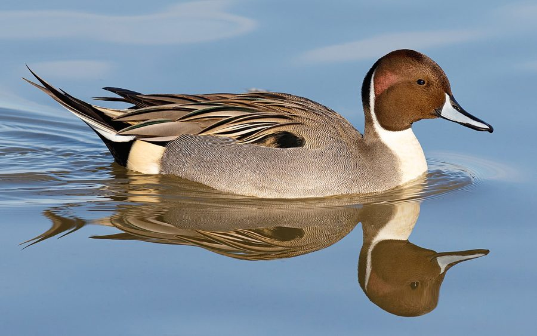

पिनटेल बत्तखNorthern Pintail
Anas acuta · Anatidae · BRD-0061

- Scientific name
- Anas acuta Linnaeus, 1758
- Family
- Anatidae
- Hindi
- पिनटेल बत्तख
- Status here
- native
- IUCN
- LC
When to look कब देखें
Expected mainly in October, November, December, January, February, March, April.
पिनटेल बत्तख / Northern Pintail
Anas acuta Linnaeus, 1758 — Anatidae
पिनटेल बत्तख (सींख-पर / सिंखदुम) — पूर्वी उत्तर प्रदेश के बड़े जलाशयों, बाढ़ वाले मैदानों और धान के खेतों में सर्दियों के दौरान पाया जाने वाला एक अत्यंत सुंदर, लंबी गर्दन और सुई जैसी लंबी पूंछ वाला प्रवासी बत्तख (migratory duck) है। यह एक शीतकालीन प्रवासी है जो साइबेरिया और मध्य एशिया के प्रजनन स्थलों से लंबी यात्रा करके अक्टूबर-नवंबर में यहाँ पहुंचता है और मार्च-अप्रैल में वापस लौट जाता है। वयस्क नर का सिर चॉकलेट-भूरे रंग (chocolate-brown head) का होता है, गर्दन के पीछे से एक सफ़ेद पट्टी नीचे छाती तक जाती है, और इसकी पूंछ के बीच के दो पंख सुई की तरह लंबे और नुकीले (long pointed tail feathers) होते हैं। मादा का रंग मटमैला भूरा और चित्तीदार होता है। यह एक 'डैबलिंग बत्तख' (dabbling duck) है, जो पानी में डुबकी लगाने के बजाय उथले पानी में केवल अपने सिर को नीचे डुबोकर (head-dipping) पानी के पौधों, बीजों और कीड़ों को खाती है।
Quick Identification त्वरित पहचान
| Feature | Description |
|---|---|
| Size | Large, elegant duck (51–76 cm total length including male tail pins); slender neck |
| Male tail | Diagnostic long, needle-pointed black central tail feathers (pins), extending 10–15 cm |
| Male neck | Dark chocolate-brown head with a white stripe running from the neck down to the chest |
| Female plumage | Cryptic mottled brown overall; slender grey neck; pointed (but much shorter) tail |
| Bare Parts | Bill is dark slate-grey with black edges; legs and feet are grey-blue |
| Foraging | Feeds in shallow water by tipping forward (tail up, head down) to reach the bottom |
Field tip: Look on large lakes or flooded paddy fields in winter. Look for very elegant, long-necked ducks. The males with chocolate-brown heads, white necks, and long pointed pin-tails are unmistakable. They fly in swift, high-pitched flocks. The male is shown in the field tip.
Morphology आकारिकी
Biometrics (typical measurements in the northern Indian plains showing sexual size dimorphism):
| Measurement | Range |
|---|---|
| Total length (Male) | 590–760 mm (including tail pins) |
| Total length (Female) | 510–570 mm |
| Wing (Male) | 260–285 mm |
| Wing (Female) | 250–270 mm |
| Tail (Male) | 150–220 mm (including pins) |
| Tail (Female) | 80–100 mm |
| Tarsus (Male) | 40–44 mm |
| Tarsus (Female) | 38–42 mm |
| Bill (Male) | 48–53 mm |
| Bill (Female) | 45–50 mm |
| Weight (Male) | 700–1100 g |
| Weight (Female) | 600–900 g |
Plumage: Males in breeding plumage have a dark chocolate-brown head and throat. A narrow white stripe runs down from the side of the head, merging into the pure white breast and belly. The back and flanks are finely vermiculated with grey and white. The upper tail-coverts are black, framing the long, black, needle-pointed central tail feathers. The wings show a bronze-green speculum bordered with buff and white. Females are cryptically patterned with brown and white, lacking the bold head and tail markings.
Bare parts: The bill is slate-grey, with black edges and central stripe. The irises are dark brown. The legs and webbed feet are grey-blue or slate-grey.
Vocalisations
Generally quiet during winter, but males produce distinct whistles when flying in flocks.
- Male call: A soft, high-pitched, clear whistle, proop-proop or krew-krew, repeated in flight.
- Female call: A low, harsh, typical duck quack, whek-wek-wek, produced when startled or calling chicks.
Behaviour & Ecology व्यवहार और पारिस्थितिकी
- Dabbling feeding: Feeds by dabbling. It tips its body forward in shallow water, pointing its tail straight up, to reach seeds, tubers, and insects on the pond bed, occasionally feeding in dry fields on fallen grain.
- Flight pattern: Flies in tight, fast, high-altitude flocks. They are among the fastest flying ducks, characterized by their slender necks and pointed wings.
- Roosting: Spends the midday hours resting in large groups (rafts) in the center of open water bodies, away from shore predators.
Life Cycle / Phenology जीवन चक्र
- Breeding: Does not breed in Uttar Pradesh. They breed in the subarctic tundra and wet meadows of Siberia, northern Europe, and Central Asia from May to July.
- UP migration calendar: Arrives in Basti by late October or early November as monsoon floods recede. They populate local lakes and harvested paddy fields, departing back to their northern breeding grounds in March and April.
- Nesting in breeding range: Builds a shallow cup nest of grass on the ground, lined with down, hidden in dry grass near water.
Host Plants or Prey आहार
Primary food items:
- Plants: Seeds of grasses, sedges, wild rice, and water weeds, including duckweed and hydrilla.
- Tubers: Roots and tubers of aquatic plants dug from the mud.
- Insects & Invertebrates: Snails, water beetles, midge larvae, and small worms eaten during foraging.
Predators / Natural Enemies शत्रु
- Raptors: Western Marsh Harriers (Circus aeruginosus) and large eagles (like Greater Spotted Eagles) hunt wintering pintails.
- Mammals: Jackals and stray dogs stalk feeding ducks along muddy margins.
- Human impact: Poaching via nets, guns, and poisoned baits is a major threat in winter wetlands.
Agricultural / Human Relevance कृषि प्रासंगिकता
Paddy field scavenger. Northern Pintails feed in harvested paddy fields during the winter, consuming spilled rice grains and weed seeds, which helps clear weeds before the spring sowing.
Conservation and legal status: Protected under Schedule IV of the Wildlife Protection Act, 1972. They are heavily threatened by illegal poaching in local wetlands, water pollution from pesticide run-off, and the reclamation of lakes for fish farming, which removes natural aquatic weeds.
Expected Locally स्थानीय रूप से अपेक्षित
Not a field record. Written from published accounts for eastern Uttar Pradesh. No confirmed local sighting yet — if you have seen it, that is what the atlas needs.
अभी तक स्थानीय पुष्टि नहीं। यह विवरण प्रकाशित स्रोतों से है, किसी अवलोकन से नहीं।
A common winter visitor to the large wetlands (taal) of the Basti district, such as the floodplain lakes of the Ghaghra river. They are often seen feeding in flooded paddy field margins during the early mornings. Their fast-flying, V-shaped flocks are a regular sight in winter skies over the region.
Distribution वितरण
Global range: Breeds in northern latitudes of Europe, Asia, and North America; migrates south to winter in tropical regions, including South Asia, Southeast Asia, and Central America.
In India: A widespread and abundant winter visitor to all wetlands, lakes, and coastal marshes.
In Uttar Pradesh: A regular winter visitor state-wide, especially in larger wetland sanctuaries and river basins.
In Basti district / eastern UP: Regularly recorded from November to February in all blocks with large open waters.
Research Questions शोध प्रश्न
Anyone can investigate these | कोई भी इन प्रश्नों की जाँच कर सकता है
- What is the ratio of male to female Northern Pintails in a wintering flock in Basti? — Conduct count surveys to record sex ratios in different months.
- What percentage of foraging time is spent dabbling in water versus grazing on land? — Track and record individual feeding activities.
- Do Pintails prefer feeding in harvested paddy fields over open lake zones in Basti? / क्या पिनटेल बत्तख बस्ती में खुले तालाबों की तुलना में कटे हुए धान के खेतों में चरना अधिक पसंद करती है? — Compare population densities.
- How do Pintails respond to the alarm calls of co-occurring Common Coots? — Observe flock flight reactions when coots alarm call.
- What date is the first Northern Pintail recorded in Basti each autumn? / हर साल शरद ऋतु में बस्ती में पहली पिनटेल बत्तख किस तारीख को देखी जाती है? — Document arrival dates over multiple years.
Similar Species मिलती-जुलती प्रजातियाँ
| Species | Key Difference | हिंदी |
|---|---|---|
| Garganey (Spatula querquedula) | Much smaller (37–41 cm); male has a broad white eyebrow; female lacks the long neck and pointed tail | गार्गनी बत्तख — बहुत छोटा आकार, सिर पर सफ़ेद भौंह |
| Northern Shoveler (Spatula clypeata) | Heavy, spoon-shaped black bill; male has a green head and chestnut flanks; lacks long pin-tail | चमचा चोंच — बहुत चौड़ी चोंच, हरे रंग का सिर |
| Lesser Whistling Duck (Dendrocygna javanica) | Rufous-brown body; long upright neck; lacks white markings and pointed tail; makes whistling calls | सीटी बत्तख — भूरा रंग, सीधी गर्दन, पूँछ पर पिन का अभाव |
Field rule: Elegant, long-necked duck with a dark chocolate-brown head, white stripe running down the neck, and long pointed pin-like central tail feathers (male) is a Northern Pintail.
Taxonomy & Classification वर्गीकरण
Original description. Carl Linnaeus described the Northern Pintail as Anas acuta in 1758 in his Systema Naturae (ed. 10, vol. 1, p. 126). The type locality was Sweden. The genus name Anas is Latin for a duck. The specific name acuta is Latin for sharp or pointed, referencing the male's long tail feathers.
Subspecies. Monotypic — no subspecies are currently recognised.
Family and order placement. Placed in the order Anseriformes, family Anatidae, subfamily Anatinae (dabbling ducks).
Phylogenetic notes. Anas acuta belongs to a group of closely related pintails (including the Eaton's Pintail and Yellow-billed Pintail) that diverged during the late Pliocene.
IUCN status rationale. Listed as Least Concern (LC) due to its massive global range, though global populations are slowly declining due to habitat loss and hunting pressure.
Photo Gallery फोटो गैलरी
References संदर्भ
- Linnaeus, C. (1758). Systema Naturae. Tenth Edition. Holmiae, p. 126. [original description]
- Ali, S. & Ripley, S. D. (1999). Handbook of the Birds of India and Pakistan. Vol. 1. Oxford University Press, New Delhi.
- Grimmett, R., Inskipp, C. & Inskipp, T. (2011). Birds of the Indian Subcontinent. 2nd ed. Christopher Helm, London.
- Kear, J. (2005). Ducks, Geese and Swans. Oxford University Press, Oxford.
- BirdLife International (2024). Anas acuta. IUCN Red List of Threatened Species. Ver. 2024.
- GBIF Occurrence Data — Anas acuta, Uttar Pradesh (2010–2025).
Source file: species/fauna/birds/northern_pintail.md